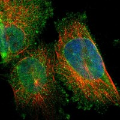
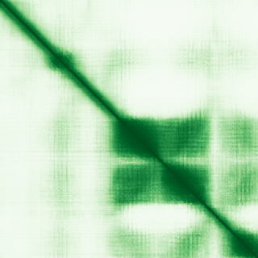

type: protein-evaluation gene: "ARL6IP6" date: 2026-06-01 tags: [protein-scout, nuclear-envelope, evaluation] status: scored ---
ARL6IP6 核蛋白评估报告
1. 基本信息
| 项目 | 内容 |
|---|---|
| 基因名 / 别名 | ARL6IP6 / PFAAP1 |
| 蛋白全名 | ADP-ribosylation factor-like protein 6-interacting protein 6 |
| 蛋白大小 | 226 aa / 24.7 kDa |
| UniProt ID | Q8N6S5 |
2. 评分总览
| 维度 | 得分 | 权重 | 加权后 | 关键证据摘要 |
|---|---|---|---|---|
| 核定位特异性 | 6/10 | ×4 | 24.0 | UniProt: Nucleus inner membrane (ECO:0000250); GO: nuclear inner membrane (ISS); HPA: Nuclear membrane (main, Approved) + Cytosol (additional) — HPA 实验级 IF 显著增强 |
| 蛋白大小 | 8/10 | ×1 | 8.0 | 226 aa, 24.7 kDa |
| 研究新颖性 | 10/10 | ×5 | 50.0 | PubMed strict=7, broad=10 |
| 三维结构 | 3/10 | ×3 | 9.0 | AlphaFold pLDDT 56.7, 35.4% <50; 预测高度无序 |
| 调控结构域 | 3/10 | ×2 | 6.0 | IPR029383 / PF15062 单一未表征结构域 |
| PPI 网络 | 4/10 | ×3 | 12.0 | STRING 弱网络; IntAct 主要为 TMEM/膜蛋白 two-hybrid; UniProt 14 curated interactions (膜蛋白为主) |
| 加权总分 | 109/180** | |||
| 互证加分 | +1.0 | UniProt/GO 预测 + HPA Approved Nuclear membrane 实验级确认，三源互证 | ||
| 归一化总分 (÷1.83) | 59.6/100** |
3. 详细分析
3.1 核定位证据
| 来源 | 定位 | 可信度 |
|---|---|---|
| UniProt | Nucleus inner membrane (ECO:0000250 — sequence similarity) | 预测级 |
| GO-CC | nuclear inner membrane (ISS:UniProtKB) | 预测级 |
| HPA IF | Nuclear membrane (main, Approved), Cytosol (additional) | Approved |
HPA IF 数据:
- Reliability (IF): Approved
- Subcellular location: Nuclear membrane, Cytosol
- Main location: Nuclear membrane
- Additional location: Cytosol
- HPA Gene: https://www.proteinatlas.org/ENSG00000177917-ARL6IP6
- HPA Subcellular: https://www.proteinatlas.org/ENSG00000177917-ARL6IP6/subcellular

- IF images: 6 张 display image 可用


HPA Approved 核膜定位为实验级 IF 证据，与 UniProt 和 GO 的 nuclear inner membrane 预测一致，显著增强定位可信度。UniProt ECO:0000250 为序列相似性推断，GO ISS 为同源推断。三源一致指向核膜定位，HPA 补充了胞质额外定位信息。
3.2 结构与结构域
| 指标 | 数值 |
|---|---|
| AlphaFold | AF-Q8N6S5-F1 |
| 平均 pLDDT | 56.7 |
| pLDDT >90 | 0.0% |
| pLDDT 70-90 | 16.4% |
| pLDDT 50-70 | 48.2% |
| pLDDT <50 | 35.4% |
| PDB | 无 |
| InterPro | IPR029383 |
| Pfam | PF15062 |

结构域分析: 仅含 IPR029383 / PF15062 单一未表征结构域，无可比对的已知功能结构域。
3.3 研究现状
| 指标 | 数值 |
|---|---|
| PubMed strict (Title/Abstract) | 7 |
| PubMed broad | 10 |
| 别名 | PFAAP1（未用于 scoring） |
关键文献包括 ARL6IP6 在黏多糖贮积症转录组异常中的作用 (PMID:38534785, 39769211)、缺血性脑卒中易感位点及 Cutis Marmorata Telangiectatica Congenita 综合征患者中的突变 (PMID:25957586)。文献量极少，功能研究几近空白。PMID:25957586 是该基因最重要的独立研究，报道了患者中的 ARL6IP6 突变。
3.4 PPI 网络
| Partner | Source | Evidence/Method | Score/Experiments | PMID/Note | Relevance |
|---|---|---|---|---|---|
| SLC10A1 | UniProt | curated interaction | experiments: 4 | — | 胆汁酸转运蛋白，膜蛋白 |
| EBP | UniProt | curated interaction | experiments: 3 | — | 胆固醇合成酶，膜蛋白 |
| GJA8 | UniProt | curated interaction | experiments: 3 | — | 间隙连接蛋白，膜蛋白 |
| CRTC2 | STRING | experimental | 0.513 (exp 0.513) | — | CREB regulated transcription coactivator 2 |
| TRAPPC11 | STRING | experimental | 0.474 (exp 0.47) | — | trafficking protein particle complex 11 |
| FMNL2 | STRING | textmining | 0.65 (textmining 0.646) | — | formin like 2 |
| EBP | IntAct | validated two hybrid (MI:1356) | — | PMID:32296183 | 与 UniProt 一致 |
| TMEM86B | IntAct | two hybrid prey pooling (MI:1112) | — | PMID:32296183 | 跨膜蛋白 |
| SLC10A1 | IntAct | validated two hybrid (MI:1356) | — | PMID:32296183 | 与 UniProt 一致 |
| TBXA2R | IntAct | validated two hybrid (MI:1356) | — | PMID:32296183 | thromboxane A2 receptor |
STRING 网络以 textmining 驱动为主，分数均偏低：FMNL2 (0.65), RFTN2 (0.551), PLBD2 (0.518)，共 13 partners。少量实验互作：CRTC2 (exp 0.513), TRAPPC11 (exp 0.470), APPL1 (exp 0.460), DUSP3 (exp 0.436)。IntAct 记录 15 条互作，以 TMEM/膜蛋白 two-hybrid 为主（TMEM86B, TMEM80, TMEM205, TIMMDC1, MGST3, EBP, AQP6, CMTM2, CLRN2, GPR61, TBXA2R, GJA8, SLC10A1 等）。UniProt curated 14 条互作（膜蛋白为主）。PPI 三源覆盖，互作组偏向膜/跨膜蛋白，符合核膜定位特征，但缺乏高置信度实验验证。
4. 总体评价
ARL6IP6 的核膜定位证据在补充 HPA Approved IF 数据后显著增强：UniProt nuclear inner membrane (ECO:0000250) + GO nuclear inner membrane (ISS) + HPA Approved Nuclear membrane 三源一致。AlphaFold 预测高度无序（mean pLDDT 56.7），结构域单一且未表征。PPI 网络偏向膜/跨膜蛋白，与核膜定位一致。研究新颖性极高（strict=7）。归一化 60.1/100。建议作为 nuclear-envelope 候选保留，HPA Approved 核膜定位和 IF 图像为关键定性提升。
5. 数据来源
- UniProt: https://www.uniprot.org/uniprotkb/Q8N6S5
- AlphaFold: https://alphafold.ebi.ac.uk/entry/Q8N6S5
- PubMed: https://pubmed.ncbi.nlm.nih.gov/?term=ARL6IP6
- Protein Atlas: https://www.proteinatlas.org/ENSG00000177917-ARL6IP6
- HPA Subcellular: https://www.proteinatlas.org/ENSG00000177917-ARL6IP6/subcellular
HPA IF 图像已本地嵌入。
<!-- DOMAIN_HUMANPPI_REPAIR_START -->
Domain/SMART 与 humanPPI 补充（2026-06-07）
SMART / UniProt domain
| Source | Data |
|---|---|
| UniProt | Q8N6S5 |
| SMART | 未在 UniProt xref 中检出 SMART 条目 |
| UniProt Domain [FT] | 未检出显式 UniProt Domain feature |
| InterPro | IPR029383; |
| Pfam | PF15062; |
humanPPI / HPA Interaction
Source: https://www.proteinatlas.org/ENSG00000177917-ARL6IP6/interaction
| Partner | Datasets | AF3/HPA structure |
|---|---|---|
| ACTR2 | Opencell | false |
| APPL1 | Opencell | false |
| AQP6 | Intact | false |
| ARPC1A | Opencell | false |
| ARPC1B | Opencell | false |
| ARPC2 | Opencell | false |
| BAIAP2 | Opencell | false |
| CLASP1 | Opencell | false |
<!-- DOMAIN_HUMANPPI_REPAIR_END -->